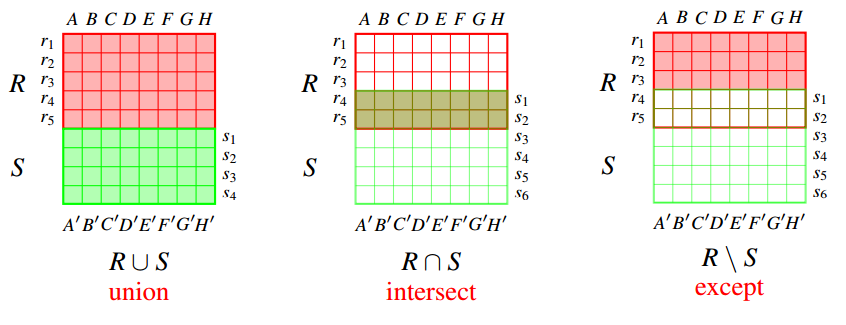
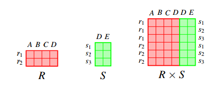
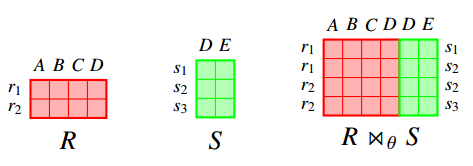
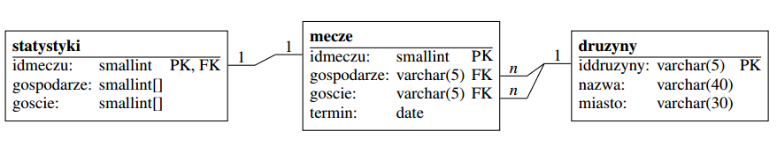

Wojciech Cibor
SQL (ang. Structured Query Language) – strukturalny język zapytań używany do tworzenia, modyfikowania baz danych oraz do umieszczania i pobierania danych z baz danych.
CREATE TABLE nazwa_tabeli
({nazwa_kolumny typ [ograniczenia_dla_kolumny] [,...] }
[CONSTRAINT ograniczenia_dla_tabeli])
CREATE TABLE Ksiazki(
Id INTEGER PRIMARY KEY,
Autor VARCHAR(50),
Tytul VARCHAR(50) NOT NULL,
Cena NUMERIC(18,2) NOT NULL
);Typy znakowe:
CHAR(n)VARCHAR(n)NCHAR(n)NVARCHAR(n)Typy liczbowe:
INTEGERFLOATNUMERIC(precision,scale)Temporal (data/czas):
DATETIMEDATETIMETyp logiczny
BITnot null - w kolumnie nie mogą być zapisywane wartości nullunique - wartosci zapisywane w kolumnie muszą być różne dla każdego wiersza w tabeliprimary key - klucz podstawowy (w zasadzie jest to połączenie zawężeń not null oraz unique).
Tworząc złozony klucz podstawowy, należy wykorzystać ograniczenia na poziomie tabelidefault wartość - zdefiniowanie wartosci domyślnejcheck (warunek) - warunek sprawdzany w czasie wprowadzania lub
aktualizacji danychreferences - ograniczenia kluczy obcychunique (lista kolumn) - wartość musi być unikalna dla każdego
wiersza
primary key (lista kolumn) - klucz głównycheck (warunek) - warunek sprawdzany w czasie wprowadzania lub
aktualizacji danychreferences - ograniczenia kluczy obcychALTER TABLE Ksiazki
ADD DataWydania DATE;ALTER TABLE Ksiazki
DROP COLUMN DataWydania;ALTER TABLE Ksiazki
MODIFY COLUMN Cena NUMERIC(18,3);DROP TABLE Ksiazki;INSERT INTO tabela VALUES(lista wartości);
INSERT INTO tabela(lista atrybutów) VALUES(lista wartości);INSERT INTO Ksiazki ('Autor', 'Tytul', 'Cena')
VALUES ('Joseph Heller', 'Paragraf 22', 19.99);
INSERT INTO Ksiazki ('Tytul', 'Cena')
VALUES ('Biblia', 199.99);INSERT INTO Ksiazki ('Autor', 'Tytul', 'Cena') VALUES
('Joseph Heller', 'Paragraf 22', 19.99),
(NULL, 'Biblia', 199.99);DELETE FROM tabela [WHERE warunek];
DELETE FROM Ksiazki WHERE Autor IS NUll;UPDATE tabela
SET atrybut1 = wartość [,atrybut2 = wartość,...]
[WHERE warunek];
UPDATE tabela
SET (atrybut1, atrybut2,...) = (wartość, wartość,...)
[WHERE warunek];
UPDATE Ksiazki
SET Cena = 12.99
WHERE Autor = 'Joseph Heller';SELECT * FROM tabela
[WHERE warunek]
[GROUP BY kolumna]
[HAVING warunek]
[ORDER BY kolumna];
SELECT *
FROM Ksiazki
WHERE cena > 100.00
ORDER BY Tytul DESC;| Id | Autor | Tytul | Cena |
|---|---|---|---|
| 2 | Biblia | 199.99 |
=, <>, >, >=, <, <=, IN, BETWEEN, LIKE, IS NULL or IS NOT NULLSELECT * FROM Ksiazki WHERE cena > 100.00;SELECT * FROM Ksiazki WHERE Autor = 'Joseph Heller';SELECT * FROM Ksiazki WHERE Autor IN IN ('Anna', 'Alicja');
SELECT * FROM Ksiazki WHERE Autor NOT IN IN ('Anna', 'Alicja');SELECT * FROM Ksiazki WHERE Data BETWEEN '2016-11-01' AND '2016-11-18'SELECT * FROM Ksiazki WHERE Autor IS NULL;
SELECT * FROM Ksiazki WHERE Autor IS NOT NULL;Operatory w klauzuli WHERE możemy łączyć, korzystając z operatorów logicznych OR i AND
SELECT * FROM Ksiazki
WHERE (Autor = 'Anna' OR Autor='Alicja')
AND Cena <= 99.99;Operator Like porównuje wzorzec z całym łancuchem znaków. Jeżeli chcemy wyszukać jakiś fragment w srodku napisu, należy na począatku i na końncu wzorca umieścić znak %. Definiując wzorzec jako znaki specjalne uzywane są: % – dowolny ciag znaków, _ – pojedynczy znak.
SELECT * FROM Ksiazki WHERE Autor LIKE 'Joseph%';SELECT * FROM Ksiazki WHERE Autor LIKE '%o%';SELECT * FROM Ksiazki WHERE Autor LIKE '_oseph%';SELECT (2*2+4)/8;SELECT Cena*100 FROM Ksiazki WHERE Autor LIKE 'Joseph%';SELECT * FROM Ksiazki WHERE Cena = 100%2;SELECT date('now');SELECT time('now');SELECT date('now','-2 years','+1 month', '-1 day');SELECT date('now','start of month','+1 month','-1 day');SELECT * FROM Ksiazki WHERE DataWydania > date('now','-2 years');SELECT * FROM Ksiazki ORDER BY Cena;SELECT * FROM Ksiazki ORDER BY Cena DESC;SELECT * FROM Ksiazki ORDER BY Cena DESC, Tytul;SELECT DISTINCT * FROM Ksiazki;SELECT DISTINCT ON (Autor) * FROM Ksiazki;SELECT * FROM Ksiazki ORDER BY Cena LIMIT 10;SELECT * FROM Ksiazki ORDER BY Cena OFFSET 5;SELECT * FROM Ksiazki ORDER BY Cena LIMIT 5 OFFSET 5;| Nazwa funkcji | Opis |
|---|---|
| avg(x) | Średnia arytmetyczna |
| count(*) | liczba wierszy spełniających okreslone warunki |
| count(x) | liczba wierszy, w których kolumna x ma wartość różną od null |
| max(x) | maksimum |
| min(x) | minimum |
| stddev(x) | odchylenie standardowe |
| sum(x) | suma |
| variance(x) | wariancja |
SELECT count(*) FROM Ksiazki;SELECT Autor, count(*)
FROM Ksiazki
GROUP BY Autor;SELECT Autor, count(*)
FROM Ksiazki
GROUP BY Autor
HAVING count(*) > 1;Operacje sumy, przecięcia (iloczynu) i róznicy odpowiadają odpowiednim operacjom algebry zbiorów. Są one wykonywane na relacjach (zbiorach krotek). Relacje będące operandami muszą miec ten sam schemat z dokładnością do dziedzin atrybutów.
select ...
union | intersect | except
select ... ;SELECT Autor FROM Ksiazki WHERE cena > 100.00
UNION
SELECT Autor FROM Ksiazki WHERE cena < 50.00;
Uzycie operatora union (również intersect i except) powoduje usunięcie duplikatów z wyniku. Operatory te mają wersję z przyrostkiem all (np. union all), której użycie powoduje zaniechanie usuwania duplikatów.
Iloczyn kartezjanski definiuje się dla dowolnych relacji.
SELECT * FROM S, R;Złączenie θ jest dwuargumentowym działaniem na relacjach. Relacja wynikowa R x θS zawiera krotki powstałe z połączenia pary krotek (pierwsza z relacji R druga z S), które spełniają warunek logiczny θ.
SELECT ... FROM tabela1 JOIN tabela2 ON warunek;
SELECT ... FROM tabela1 JOIN tabela2 USING(atrybut1,atrybut2,...);Mozliwe jest użycie tej samej relacji wielokrotnie w zapytaniu, ale wymaga to zastosowania indywidualnych aliasów dla każdej kopii.
SELECT d1.nazwa, d2.nazwa, termin
FROM druzyny d1 JOIN mecze ON d1.iddruzyny = gospodarze
JOIN druzyny d2 ON d2.iddruzyny = goscie;